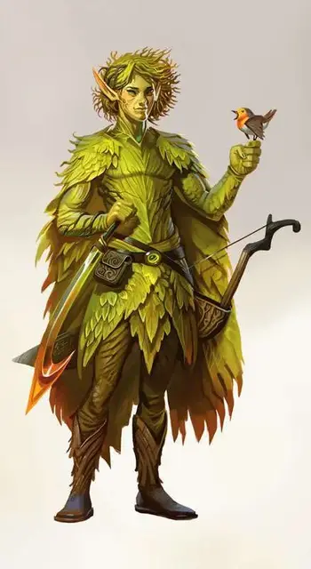

Весенний эладрин
Spring Eladrin
Средняя Фея (Эльф), хаотично-нейтральная

Класс Доспеха 19 (природный доспех)
Хиты 127 (17к8 + 51)
Скорость 30 футов
| мод | спас | ||
|---|---|---|---|
| СИЛ | 14 | +2 | +2 |
| ЛОВ | 16 | +3 | +3 |
| ТЕЛ | 16 | +3 | +3 |
| мод | спас | ||
|---|---|---|---|
| ИНТ | 18 | +4 | +4 |
| МДР | 11 | +0 | +0 |
| ХАР | 18 | +4 | +4 |
Навыки Обман +8, Убеждение +8
Сопротивление урону дробящий, колющий, рубящий от немагических атак
Чувства тёмное зрение 60 футов, пассивное Восприятие 10
Языки Общий, Сильван, Эльфийский
Опасность 10 (5900 опыта)
Бонус мастерства +4
Среда обитания Лес, Луг
Особенности
Фейский шаг (перезарядка 4-6). Бонусным действием эладрин может телепортироваться на расстояние до 30 футов в свободное пространство, находящееся в его поле зрения.
Врождённое колдовство. Базовой характеристикой эладрина является Харизма (Сл спасброска от заклинания 16). Он может накладывать следующие заклинания, не нуждаясь в материальных компонентах:
• Неограниченно: очарование личности [charm person], Жуткий смех Таши [Tasha’s hideous laughter]
• 3/день каждое: смятение [confusion], речь златоуста [enthrall], внушение [suggestion]
• 1/день каждое: мираж [hallucinatory terrain], неудержимая пляска Отто [Otto’s irresistible dance]
Пленительное обаяние. Любое существо, не являющееся эладрином и начинающее свой ход в пределах 60 футов от весеннего эладрина, должно совершить спасбросок Мудрости Сл 16. При провале существо становится очарованным эладрином на 1 минуту. При успехе существо становится невосприимчивым к Пленительному Обаянию эладрина на 24 часа. Каждый раз, когда эладрин причиняет урон очарованному существу, оно может повторить спасбросок, оканчивая эффект при успехе.
Сопротивление магии. Эладрин совершает с преимуществом спасброски от заклинаний и прочих магических эффектов.
Изменчивая природа. Всякий раз, когда эладрин заканчивает продолжительный отдых, он может сменить свою форму, если дееспособен. Этой формой может быть летний эладрин, осенний эладрин или зимний эладрин. Когда эладрин делает это изменение, он использует блок статистики новой формы, вместо старой. Любой ущерб, нанесённый эладрину в его первоначальной форме, относится к новой форме, как и любые условия или другие продолжающиеся эффекты, влияющие на неё.
Действия
Мультиатака. Эладрин совершает две атаки оружием. Вместо одной из атак он может наложить заклинание.
Длинный меч. Рукопашная атака оружием: +6 к попаданию, досягаемость 5 футов, одна цель. Попадание: 6 (1к8 + 2) рубящего урона или 7 (1к10 + 2) рубящего урона, если используется двумя руками, плюс 4 (1к8) урона психической энергией.
Длинный лук. Дальнобойная атака оружием: +7 к попаданию, дистанция 150/600 футов, одна цель. Попадание: 7 (1к8+3) колющего урона плюс 4 (1к8) урона психической энергией.
Описание
Эладрины пребывают в зелёном великолепии Страны Фей. Они связаны с эльфами, живущими на Материальном плане, и напоминают их как в их любви к красоте, так и в ценности, которую они придают личной свободе. Но где другие эльфы могут укротить свою дикую натуру, эладрины – существа, управляемые эмоциями, и из-за их уникальной магической природы они подвергаются физическим изменениям, чтобы соответствовать изменчивостью их характера.
Эладрины провели столетия в Стране Фей, и в результате, большинство из них стали настоящими фейскими сущностями. Некоторые из них по-прежнему гуманоиды, похожие на их других родственников-эльфов. Представленные здесь эладрины относятся к разновидности фей.
Существа страсти. Магия, протекающая через эладринов, реагирует на их эмоциональное состояние, превращая их в разные сезонные формы, со своим уникальным поведением и способностями, которые меняются с их формами. Некоторые эладрины могут оставаться в определённом аспекте в течение многих лет, в то время как другие проходят через эмоциональный спектр каждую неделю.
Влюблённые красотой. Независимо от своего мировоззрения, эладрины любят красоту и окружают себя прекрасными вещами. Эладрины пытается обладать любыми объектами, которые они находят прекрасными. Они могут стремиться приобрести картину, статую или сверкающую драгоценность. Когда они сталкиваются с людьми с прекрасной фигурой или эмоциональным характером, они используют свою магию, чтобы радовать этих людей или, в случае злого эладрина, похищать их.
Весенние эладрины. С полными радостью сердцами весенние эладрины скачут по своим лесным царствам, а по воздуху слышны их смех и песни. Эти игривые эладрины очаровывают других существ, наполняя их весенней радостью. Их выходки могут привести других существ к опасности и натворить им много бед.